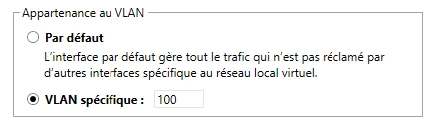

La transcription conserve les repères des pages du support. Les marques du centre et les valeurs de connexion propres au laboratoire sont neutralisées. Les visuels retenus sont isolés.
Gestion du réseau
Gestion du réseau
| Équipements | Ports |
|---|---|
| Postes clients | 1 à 12 |
| Serveurs | 13 à 18 |
| Téléphones | 19 à 24 |
Les VLAN
Les VLAN
L’affectation à un VLAN est liée au port de raccordement du switch
L’affectation du VLAN est liée à l’adresse MAC de l’équipement
L’affectation du VLAN est liée à l’adresse IP de l’équipement
Les VLAN
Adresse MAC Destination → Adresse MAC Source → TAG VLAN 802.1Q (4 octets) → Type / longueur → Données → CRC.
| Champ | Longueur | Valeur ou information du schéma |
|---|---|---|
| TPID (Tag Protocole Identifier) | 16 bits | 0x8100 |
| TCI (Tag Control Identifier) | 3 bits | Priorité utilisateur |
| TCI (Tag Control Identifier) | 1 bit | Canonical Format Indicator |
| TCI (Tag Control Identifier) | 12 bits | VLAN ID |
Les VLAN
Le schéma représente trois commutateurs à Nantes. Les ports de chacun sont numérotés de 1 à 24.
| Commutateur | Groupes de ports représentés | Port Trunk |
|---|---|---|
| Nantes - RDC | Postes clients – vlan3 (ports 1 à 12) · téléphones – vlan2 (ports 13 à 21) | 23 ↔ port 23 du cœur de réseau |
| Nantes Cœur de réseau | Les ports 23 et 24 relient le cœur aux deux commutateurs d’accès | 23 ↔ RDC · 24 ↔ étage 1 |
| Nantes – Étage 1 | Postes clients – vlan3 (ports 1 à 7) · téléphones – vlan2 (ports 8 à 13) · serveurs – vlan5 (ports 14 à 19) | 24 ↔ port 24 du cœur de réseau |
Le repère Port Trunk du dessin montre vlan3 et vlan2.
Les VLAN
| Type de port | Utilisation |
|---|---|
| Port Access | Port utilisé pour communiquer avec un équipement terminal, un seul VLAN peut lui être affecté |
| Port Trunk | Port utilisé pour la liaison vers d’autres commutateurs, un ensemble de VLAN peut lui être affecté |
| Marquage | Effet |
|---|---|
| Marquage actif | Le marquage des paquets (champ TAG VLAN) est propagé à leur sortie du switch |
| Marquage inactif | Le champ TAG VLAN est supprimé avant la remise de la trame |
| Affectation | VLAN |
|---|---|
| Le VLAN par défaut | VLAN1 |
| D’autre(s) VLAN(s) | Le(s) VLAN(s) choisis |
Les VLAN

Gestion du réseau
Les composantes vSphere du
réseau
Les composantes vSphere du réseau
VMware
vSwitch0
Par défaut le vSwitch0 est créé, il est utilisable :
Les composantes vSphere du réseau
Cette fonctionnalité requiert le niveau de licence Enterprise plus.
Les composantes vSphere du réseau
ESXi
VMware
Networking
Type
vSwitch0
Création de réseau à destination des besoins de
l’infrastructure de virtualisation
Port group de
type Virtual
machine
Port group de type VMkernel
Les composantes vSphere du réseau
ESXi
pNIC
VMware
VMNIC
pNIC
Networking
VMNIC
vSwitch0
Les composantes vSphere du réseau
Un adressage unique
Si les cartes sont liées à un groupement de port typé
VMkernel
Un débit cumulé
Mode de configuration actif - actif
Un gain de tolérance de pannes
Mode de configuration actif - passif
Les composantes vSphere du réseau
13 14 15 16 17 18
19 20 21 22 23 24
Par ordonnancement des cartes : pas de répartition de charge, seule la défaillance d’une carte entraîne l’utilisation de la suivante
Les composantes vSphere du réseau
ESXi
pNIC
VMware
VMNIC
Networking
vSwitch0
vNIC
Port group de
type Virtual
vNIC
machine
La segmentation en VLAN peut être configurée au niveau des vNIC
Port group de type VMkernel
Les composantes vSphere du réseau
Réseau pour
Gestion de l’infrastructure
Déplacement
de VM
Flux iSCSI
Très haute disponibilité
les VM
Réseau pour
Gestion de l’infrastructure
Déplacement
de VM
Flux iSCSI
Très haute disponibilité
les VM
VMNIC1
VMNIC
2
VMNIC3
VMNIC4
Les composantes vSphere du réseau
SW3 SW2 SW1
Physique
Stockage baie
de disques
vSwitch 1
vSwitch 2
Groupement de ports
Groupement de ports GESTION (VMkernel)
vMotion (VMkernel)
STOCKAGE
(VMkernel)
Logique
vSwitch 0
VM
Groupement de ports
VM PROD (VM Network)
Les composantes vSphere du réseau
Switch
ESXi
pNIC
VMware
VMNIC
Networking
vSwitch0
vNIC
Port group de
type Virtual
vNIC
machine
Port group de type VMkernel